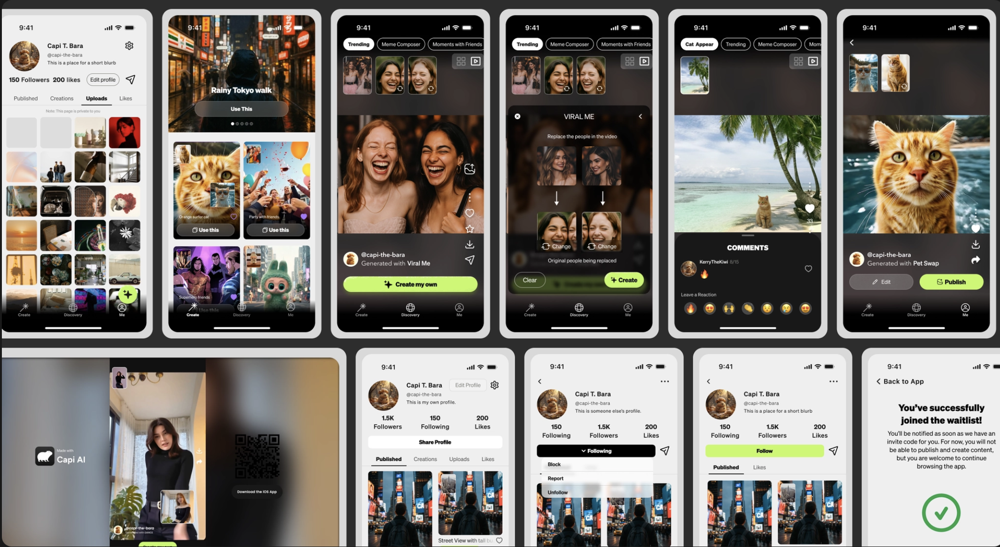

Case Study: CAPI
Personalized, expressive, and fun stories
TL;DR
From camera roll to creative expression
CAPI AI helps casual and power creators turn favorite moments into personalized, shareable videos. I led product design, strategy and execution from a major UX upgrade through TestFlight and the first public App Store launch.
- My role
- Principal Product Designer & Product Manager
- Team
- Executive leadership, AI / model engineers, frontend engineers, backend engineers and QA
- Timeline
- Joined April 2025
Background
Connecting vision and execution
My role expanded from principal product design into product strategy and cross-functional execution. I translated executive ideas into actionable requirements, UX flows and mockups, working with engineering through rapid iteration and changing priorities.
Problem
An intimidating path from memory to creation
People enjoy capturing and sharing meaningful moments, but can find content creation intimidating. AI adds uncertainty: people are still developing expectations for how generation works and what its output will look like.
Research
Three sources of directional signal
Internal dogfooding revealed uncertainty about generation and AI output. Competitive analysis surfaced dense controls and the intimidating blank canvas. Early external feedback pointed to low confidence in output and a desire for clearer guidance.
Process
A shared foundation for a growing AI product
As new AI workflows were added, I worked with the Head of Product and designers I managed to establish a lightweight design system. Repeatable generation states, colors, prompt panels, presets and carousels gave the team consistent patterns to build from.
UX flows and mockups made abstract ideas tangible and aligned executive leadership with frontend, backend and AI/ML engineering.
Final product
An approachable creation experience
The product brings camera-roll content into a guided AI creation experience for casual and power creators. The first TestFlight release developed into a public App Store launch.

Impact
A launch and a system to build on
The work delivered a 0→1 App Store launch and established shared AI-UX foundations. A scalable interaction and design system supported new capabilities while keeping the experience coherent.